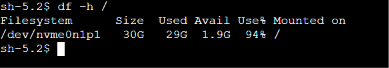

Automation and the incident
Two automations
| 1 · Nightly backup | 2 · Health and answer check | |
|---|---|---|
| Script | scripts/backup.sh | scripts/healthcheck.sh + ask_model.py |
| Schedule | cron, 02:00 Manila every night | cron, every 5 minutes (site); the AI answer check runs on the first run of each hour |
| What it does | Dumps MongoDB, archives config, uploads both to S3, reports BackupFailed 0/1 | Loads the site and reports SiteDown; once an hour asks the model a question with a known answer and reports AnswersFailed, EmptyAnswer, AnswerLatencyMs |
| Ran unattended at | FILL-IN, FILL-IN, FILL-IN | FILL-IN first … FILL-IN last (FILL-IN runs) |

/askalinaw/automation log: timestamped lines from both jobs on different days, with nobody logged in.Deploy instructions are in the repository README.md.
Incident INC-01: the disk filled up
| When (Manila time) | What happened |
|---|---|
| FILL-IN | Started: a runaway "chat debug log" began writing 1 GB every 30 s (fault injected with fault/fill-disk.sh). |
| FILL-IN | Noticed: email "ALARM: askalinaw-disk-high". |
| FILL-IN | Site: FILL-IN (e.g. new messages fail to save, "Something went wrong"). |
| FILL-IN | Fixed: log truncated, app restarted, test question answered correctly. |
Time to detect: FILL-IN min. Time to fix: FILL-IN min (from alarm to working).
Investigation

df -h / at 98%.
du pointing to /var/log/askalinaw/chat-debug.log.Root cause
The disk filled because a debug log under /var/log/askalinaw/ had no log rotation or size limit. It grew until the
30 GB root disk was full. MongoDB then could not write, so LibreChat could not save messages or sessions, and users got errors.
Restarting alone would not have helped: the file would still be there.
Prevention, and proof it works
- Log rotation (
infra/logrotate-askalinaw): every log in our folders is capped at 50 MB × 3, checked hourly. Docker container logs were already capped at 10 MB × 3. - Alarm on the root-cause metric:
askalinaw-disk-highat 85% gave us warning before 100%. - Verified: FILL-IN, e.g. "wrote a 200 MB test log, ran
logrotate -f, the file was rotated and compressed" plus a screenshot.
Runbook: Server disk full
The full runbook is fault/RUNBOOK-disk-full.md. Last tested FILL-IN-DATE, takes about 15 minutes.
1. WHAT IT IS FOR Get Askalinaw working again when the root disk is full, and stop it refilling.
2. YOU NEED IT WHEN Email "ALARM: askalinaw-disk-high"; users can't save chats. Check: df -h /
3. AFFECTS Everyone. New messages and logins fail.
4. DO IT sudo -i
du -xh / --max-depth=2 | sort -rh | head -15 -> find the big file
lsof +L1 -> deleted-but-open files?
truncate -s 0 /var/log/askalinaw/chat-debug.log -> df -h / back to normal
cd /opt/LibreChat && docker compose restart api mongodb
install log rotation (runbook step 6)
5. CHECK df < 85% · test question answered · disk alarm back to OK · no alarms for 10 min
6. UNDO truncation only loses that log; if the DB is damaged run scripts/restore-test.sh
7. GOTCHAS rm on an open log doesn't free space - use truncate